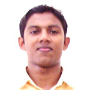

URL: http://celos.ac.in/index.php?student_deepak

Batch - 1
Centre of Excellence in Lasers and Optoelectronic Sciences,
Cochin University of Science and Technology, Cochin - 682022.
E-mail: {NOSPAM_EMAIL:towardsdeepu@rediffmail.com}
Deepak V is a native of Cochin itself. He joined CELOS in 2002 and completed his 5 year integrated MSc in Photonics in 2007 securing a first class degree. Soon after completing his MSc, he got admission at the Technical University of Denmark to pursue his doctoral studies.
His interest areas are Laser Systems, Bio-medical Photonics and Nano Optics and he wants to establish a R & D career in any of his interest fields.
He did his final semester project entitled "Investigations on the Pump Uniformity and Gain Uniformity in Power Scalable Disk Lasers" at Laser Science and Technology Centre, Defence Research and Development Organization, New Delhi whereas his sixth semester project entitled "Optical Communication System using Photo-detectors" was done at CELOS itself.
He was in the organizing committee of PLASMA 2005. He was an active participant in various activities of the department as well as ISP-SPIE student chapter and also a member of the "Optics to School" team.
He has won numerous prizes in various cultural events right from the school level up to the university level. Also, he is a good sportsman and was part of the University Cricket Team.